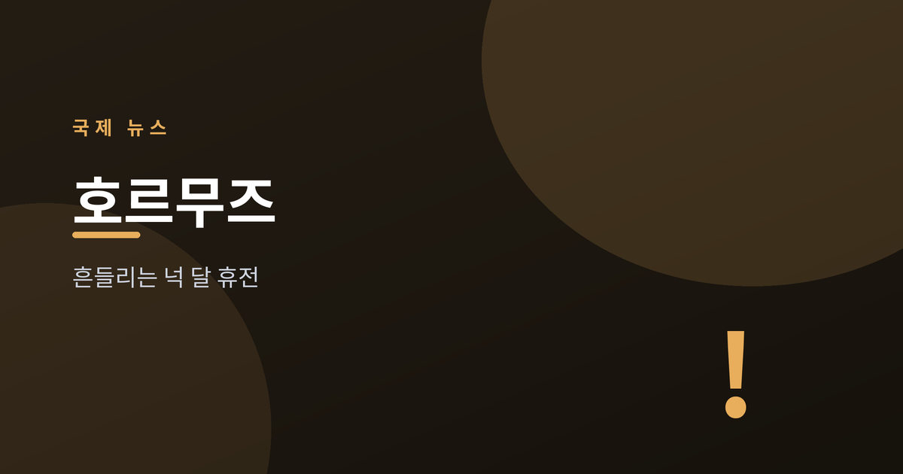
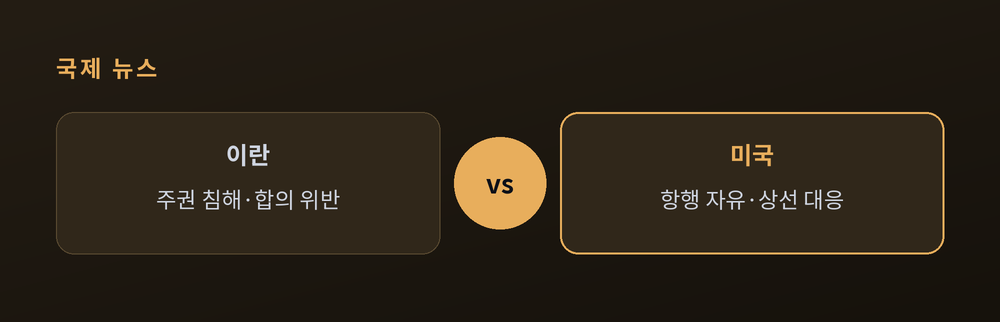
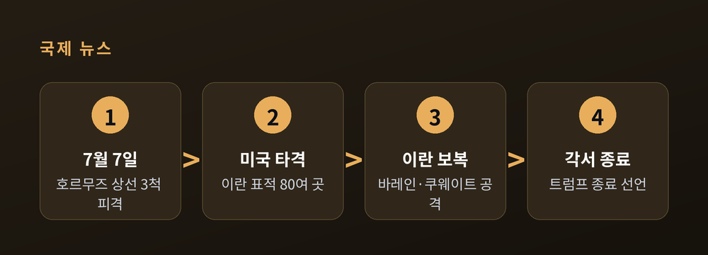
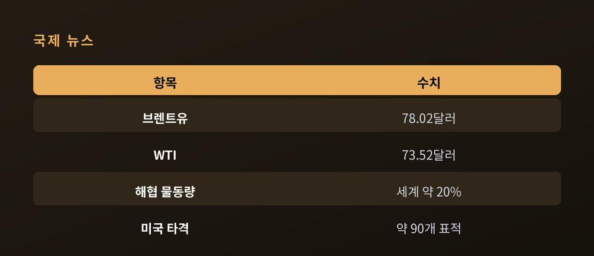
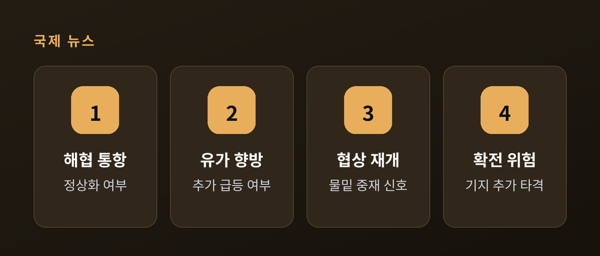

호르무즈 상선 피격에 흔들리는 휴전

2026년 7월 초, 호르무즈 해협에서 상선이 잇따라 피격되고 미국과 이란이 서로를 겨냥한 타격을 주고받았습니다. 지난 4월 성립된 휴전이 다시 흔들리는 국면입니다. 이번 글에서는 무슨 일이 있었는지, 왜 중요한지, 앞으로 어떻게 될지를 확인된 사실만 추려 정리해 보겠습니다. 국제 민감 사안인 만큼 양측 주장과 국제사회 반응을 함께 담고, 검증되지 않은 부분은 그대로 '주장'으로 표시하겠습니다.
발단은 상선 피격이었습니다.
미국 측 설명에 따르면, 7월 7일 현지시간 월요일 밤부터 화요일 오전 사이 호르무즈 해협을 지나던 상선 3척이 24시간 안에 잇따라 공격을 받았습니다. 이란 군이 월요일 밤 최소 미사일 2발을 상선에 발사했고, 화요일 오전 이란혁명수비대(IRGC)가 세 번째 상선을 공격했다는 것입니다.
피격된 배 가운데 두 척은 신원이 확인됐습니다. 카타르 소유 LNG 운반선 '알 레카야트'와 사우디 선적 초대형 유조선 '웨디안'입니다. 알 레카야트는 기관실 화재로 폭발 위험이 생겨 승조원이 대피했고, 나머지 선박도 일부 손상됐지만 인명 피해는 없이 항해를 이어갔습니다.
책임 소재는 아직 단정하기 어렵습니다. 카타르는 자국 유조선 공격의 배후로 이란을 지목했고 이란 국영매체도 책임을 시사했지만, 이란 정부의 공식 인정은 없었습니다. 이 대목은 '이란의 소행이라는 주장'으로 남겨 두는 편이 정확합니다.

미국의 대응은 빨랐습니다.
미 중부사령부(CENTCOM)는 상선 3척 피격에 대한 대응이라며 이란 내 표적 타격을 개시했습니다. 정밀 유도무기로 80개 이상의 표적을 때린 뒤 약 4시간 만에 작전을 마쳤다고 밝혔습니다. 이어 수요일 이후에는 "호르무즈 해협 항행의 자유를 위협하는 이란의 능력을 추가로 약화한다"며 약 90개 표적을 다시 타격했다고 발표했습니다. 타격은 이란샤르, 반다르아바스, 코나라크, 차바하르, 부셰르 등지에 이어졌고, 대상은 방공망과 지휘통제 시설, 연안 레이더, 대함미사일 능력, IRGC 소형 고속정 등이었다고 미국은 설명했습니다.
이란도 물러서지 않았습니다.
IRGC는 미사일과 드론으로 바레인·쿠웨이트 내 미군 표적 85곳을 타격했다고 주장했습니다. 이란 정규군은 별도로 바레인의 셰이크 이사 공군기지(이사 공군기지) 미군 집결지를 드론으로 공격했다고 밝혔습니다. "미국의 남부 이란 공격과 휴전 합의 위반에 대한 대응"이라는 것이 이란 측 설명입니다. 요르단을 겨냥한 공격도 보도됐습니다. 다만 이 수치와 성과는 모두 발표 주체의 주장이며, 상호 검증된 것은 아닙니다.

사상자에 대해서는 신중해야 합니다. 이란 당국은 미국의 새 타격 이후 최소 14명이 숨지고 수십 명이 다쳤다고 밝혔습니다. 세부적으로는 이란군 다수와 후제스탄주 민간인, 이란샤르 공항의 소방관 등이 포함됐다고 주장했습니다. 그러나 이는 이란 당국·이란군 발표 기준이며, 독립적으로 검증된 수치는 확인되지 않았습니다.
첫째, 넉 달 넘게 이어져 온 휴전의 골격이 흔들립니다.
이 전쟁은 2월 28일 이스라엘·미국의 대이란 공습으로 시작됐습니다. 5주 넘는 교전 끝에 4월 휴전에 이르렀고, 6월 17일에는 트럼프 미 대통령과 페제시키안 이란 대통령이 이른바 '이슬라마바드 각서'에 서명해 전쟁 종식 절차를 공식화했습니다. 최종 합의까지 60일의 협상 기간도 뒀습니다. 그런데 서명 3주도 안 돼 해협에서 다시 포화가 오간 것입니다. 트럼프 대통령은 튀르키예에서 열린 NATO 정상회의 도중 이란과의 각서가 "끝났다"고 선언했습니다. 다만 전면전 복귀는 원치 않으며 협상은 계속될 수 있다고 여지를 남겼습니다.
둘째, 세계 경제의 급소가 걸려 있습니다.
호르무즈 해협은 통상 세계 석유 물동량의 약 20%가 지나는 요충지입니다. 이곳이 흔들리면 유가는 즉각 반응합니다. 실제로 7월 초 브렌트유는 약 3% 올라 배럴당 74.16달러, 미국 WTI는 70.44달러로 마감했습니다. 주 중반 트럼프 대통령이 2차 폭격과 해상 봉쇄 재부과를 위협하자 유가는 더 뛰었습니다. WTI는 4.4% 올라 73.52달러, 브렌트유는 5.2% 급등해 78.02달러로 마감했습니다. 미국은 8월 21일까지 허용했던 이란산 원유 판매 승인을 철회했습니다.

셋째, 국제사회가 움직이기 시작했습니다.
프랑스의 마크롱 대통령은 유엔 안전보장이사회 긴급회의 소집을 요구하며, 국제법 밖에서 이뤄지는 타격을 "승인할 수 없다"고 밝혔습니다. 이란의 유엔대사는 안보리와 사무총장에게 서한을 보내 미국의 타격을 "유엔 헌장의 명백한 위반"이라고 규탄했습니다. 세계보건기구 사무총장도 공격을 규탄했고, 국제앰네스티 사무총장은 전쟁범죄 소지를 언급했습니다. 반면 미국은 "이란이 호르무즈 해협을 통제하지 못한다"는 입장을 고수하고 있습니다. 어느 한쪽의 주장만으로 사태를 재단하기 어려운 이유입니다.
지금 국면은 '전면전 재개'와 '협상 복귀' 사이 어딘가에 있습니다.
트럼프 대통령이 각서의 종료를 선언하면서도 협상 여지를 남긴 점, 그리고 파키스탄과 카타르가 양국을 협상 테이블로 되돌리기 위해 물밑에서 움직이고 있다는 점은 관리 국면의 신호로 읽힙니다. 반대로 이란이 "미국이 공격을 계속하면 역내 다른 미군 기지도 표적이 될 수 있다"고 경고한 대목은 확전의 불씨입니다.

관건은 결국 세 가지로 좁혀집니다. 해협의 통항이 정상화되는지, 유가가 어디까지 오르는지, 그리고 물밑 협상이 다시 테이블 위로 올라오는지입니다. 여기에 사상자 규모와 책임 소재를 둘러싼 검증이 뒤따를 것입니다. 지금 나온 수치들은 대부분 발표 주체의 주장이라는 점을 기억해 둘 필요가 있습니다.
끝으로 한 가지만 덧붙이겠습니다.
이번 사태의 본질은 "합의는 서명으로 끝나지 않고 이행으로 완성된다"는 오래된 교훈을 다시 보여 줍니다. 각서에 서명한 지 3주 만에 해협에서 포화가 오갔다는 사실이 그것을 말해 줍니다. 이 긴장이 관리 국면으로 접어들지, 다시 전쟁으로 번질지 — 지금은 어느 쪽도 단정할 수 없습니다. 그래서 우리는 한쪽 편을 들기보다, 확인된 사실과 검증되지 않은 주장을 구분해 지켜보는 자세가 필요하지 않을까 생각합니다.
참고 출처: 로이터·AP·CNN·워싱턴포스트·알자지라·NPR·Axios·Bloomberg·CNBC·Euronews·Britannica·위키피디아